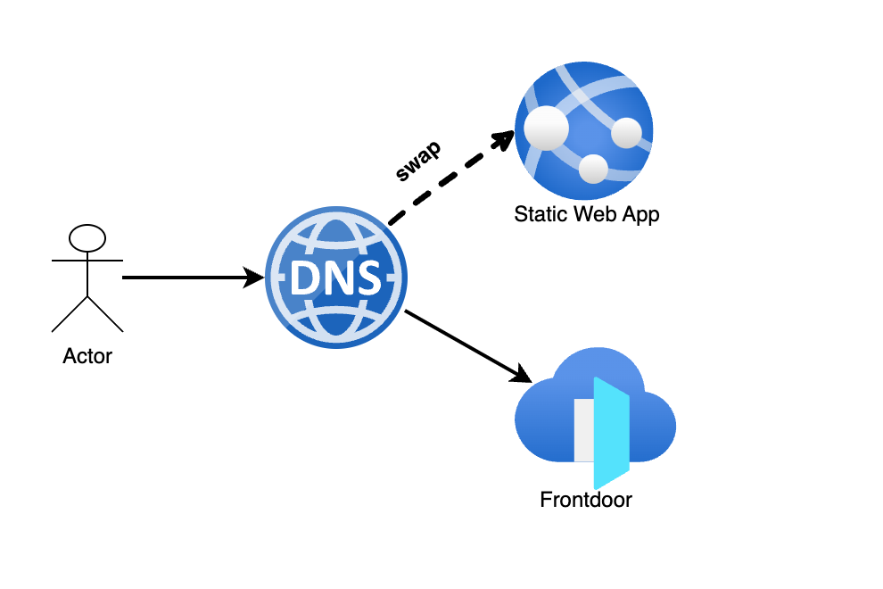

Shutter Implementation and Design
Purpose
The purpose of this document is to describe the shutter solution design and its end to end implementation.
Implementation and Customization
Solution

Default shutter page
By default the following shutter page is used as per the GOV.UK patterns service-unavailable-pages
Implementation
Creating and Enabling the shutter solution for an application is a 3 step process as outlined below:
- By default, all applications are provisioned with an
Azure Static Web App. If you wish to exclude this feature, you can set the value of shutter_app tofalse. - To upload static content to an Azure Web App, you can use the repository named azure-shutter-pages.
- Enable shutter with a DNS swap
Enable shutter with a DNS swap
Individual Records
With everything setup to render a shutter page you can now swap the DNS from Azure FrontDoor to the Azure Static Web App endpoint. This is only relevant for A and CNAME type records.
- Clone the azure-public-dns repository
- Create a branch for your change
- Within the
environmentsandshutteringfolders check that a file exists for the environment and DNS zone you need to change e.g.environments/prod/platform-hmcts-net.yaml - Lets assume this application need to be shuttered
www.decree-absolute.apply-divorce.service.gov.uk - Find the relevant file relating to the DNS zone
apply-divorce-service-gov-uk(and the environment being shuttered) and make sure there is a record for the service - Now check that an equivalent shuttering configuration exists for this record
Adding a missing shutter config
- If no shutter config exists you will need to add it.
- The shuttering file names match the environment file names so make sure to add it to the correct file. In this example we would need to add the shutter config value to
shuttering/prod/apply-divorce-service-gov-uk.yml - When adding a new shutter value, the
namefield must match that of the DNS record, this is how we know which shutter config matches which DNS record
- name: "www.decree-absolute" shutter: true
- If the shutter config exists, changing the shutter value from false to true is all that is required to enable shuttering for this service.
What happens when you change the shutter value
Setting
shutter: truewill enable the shutter page and redirect all traffic to Azure CDN.
Settingshutter: falsewill disable the shutter page and redirect all traffic back to Azure Frontdoor.
- Create a PR with the changes and have it reviewed. Once merged this will update the exist record to point to the Azure Static Web App endpoint.
All Records in a single DNS Zone
Shuttering all records in a single DNS zone follows a similar process to individual records.
The ability to shutter all records in a single DNS zone allows for a complete service to be placed into shuttering for maintenance or upgrade purposes without needing to change every single record configuration.
This is a quality of life change, the functionality of the shuttering remains the same.
- Clone the azure-public-dns repository
- Create a branch for your change
- Within the
environmentsandshutteringfolders check that a file exists for the environment and DNS zone you need to change e.g.environments/prod/platform-hmcts-net.yaml - Lets assume this zone needs to be shuttered
apply-divorce.service.gov.uk - Find the relevant file relating to the DNS zone
apply-divorce-service-gov-uk(and the environment being shuttered) - Now check that an equivalent shuttering configuration exists for this record
Adding a missing shutter config
- If no shutter config exists you will need to add it.
- In the event that there is no shutter file with a name that matches the environment file it can be created by copying any existing file and renaming it to match the environment file name. In our example this would be
shuttering/prod/apply-divorce-service-gov-uk.yml - In this new file, make sure to remove any existing A and CNAME records and replace these with values from the DNS Zone in question
- If this DNS zone has never had a shutter configuration then the component will also need to be updated.
- Find the component for the DNS zone and add the following config, in this example the file would be: components/prod/apply-divorce.tf and the example config to add should be added to the file.
- With this in place Terraform will now use this file and its configuration to shutter records in the DNS zone (e.g.
apply-divorce-service-gov-uk)
data "local_file" "apply_divorce_shutter_config" { filename = "${path.cwd}/../../shuttering/prod/apply-divorce-service-gov-uk.yml" }
module "apply-divorce" { // existing config shutter_config = data.local_file.apply_divorce_shutter_config.content }
- If the shutter already config exists, you can then shutter all records in the zone in one of two ways:
- Use the
shutter_alloption to shutter every record in the zone, this overrides all other values in the shuttering config file. - Use the individual
shutter_all_aorshutter_all_cnameoptions to shutter only that record type. These override all values for that specific record type; A or CNAME. This allows more granular control whilst still offering the option to shutter many records at once saving time.
- Use the
- What happens when you change these shutter values
Effect
Setting
shutter_all: truewill enable the shutter pages and redirect all traffic to Azure CDN for EVERY record in that zone.
Settingshutter_all_a: falsewill enable the shutter pages and redirect all traffic to Azure CDN for EVERY A record in that zone.
Settingshutter_all_cname: falsewill enable the shutter pages and redirect all traffic to Azure CDN for EVERY CNAME record in that zone.
Hierarchy
shutter_allis a master switch and overrides all other values.
shutter_all_aandshutter_all_cnameare exclusive and will not overlap or affect each other.
- Create a PR with the changes and have it reviewed. Once merged this will update the exist record to point to the Azure Static Web App endpoint.
This is a self service request and does not require Platform Operations to create, approve or merge. Therefore this can be done out of hours without having Platform Operations around for shuttering only.
Record Types
There are two record types that allow shuttering to be enabled. These are:
- A records
- The “A” stands for “address” and this is the most fundamental type of DNS record. It indicates the IPv4 address of a given domain.
- CNAME records
- A “canonical name” (CNAME) record points from an alias domain to a “canonical” domain. A CNAME record is used in lieu of an A record, when a domain or subdomain is an alias of another domain. All CNAME records must point to a domain, never to an IP address.
Shuttering A record types
A record types have some specific requirements with regard to shuttering. A records typically only allow IP addresses to be used BUT within Azure it is possible to direct A records to Azure resources, known as alias records. This means we can direct A record types to Azure services such as Azure Front Door or Azure Web Apps.
The way DNS has been setup for this project, an A record can have one of the following set:
- record - either a single IP or a list of IP addresses
- shutter_resource_id - an Alias to an Azure resource specifically used for shuttering
- alias_target_resource_id - an Alias to an Azure resource if not IP is used, can also be used for shutting but preference should be shutter_resource_id
For shuttering purposes if you need to shutter an A record it must have one of the following settings in the A record configuration:
- shutter_resource_id
- alias_target_resource_id
This is a requirement and failing to set one of these values on your A record before shuttering will result in the CI pipelines failing and your site may be in a limbo state until reverted or updated and re-run.
Shuttering CNAME record types
CNAME records are much easier to shutter, for each record an equivalent shutter config must exist, as detailed in the Individual Records section.
As long as there is a matching shutter config for the DNS record you can update the shutter value to true to enable a shutter.
Shuttering Errors
Shuttering error message - 404 Not Found - we couldn’t find the page, please check the URL and try again - this occurs when browsing to folders after the main URL, which have not been set up for shuttering. Therefore teams need to update their custom shutter page.
See azure-shutter-pages repository for examples, where there is shutter pages for further directories beyond the main URL. For example: et-pet
Shuttering All CFT Services
To shutter all CFT services refer to these PRs as an example to use: Shutter - https://github.com/hmcts/azure-public-dns/pull/1674 and Unshutter - https://github.com/hmcts/azure-public-dns/pull/1677